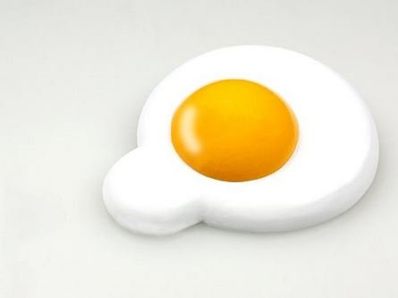

Lab 2
This is my webpage for the second lab, which is based off of APIs.
If you run this page as a local server through node, and you allow the site access to your location, you will see my weather widget pop up in the bottom right corner of the screen.
I set it so every minute the widget will update.
If you deny access, I will be sad and you won't be able to see my widget.
This was the first time using node with a html page with static content, and although it wasn't required to do it for this lab it was still fun working on how to get everything set up by myself.
I ran out of things to display here, so here is a picture of an egg.
